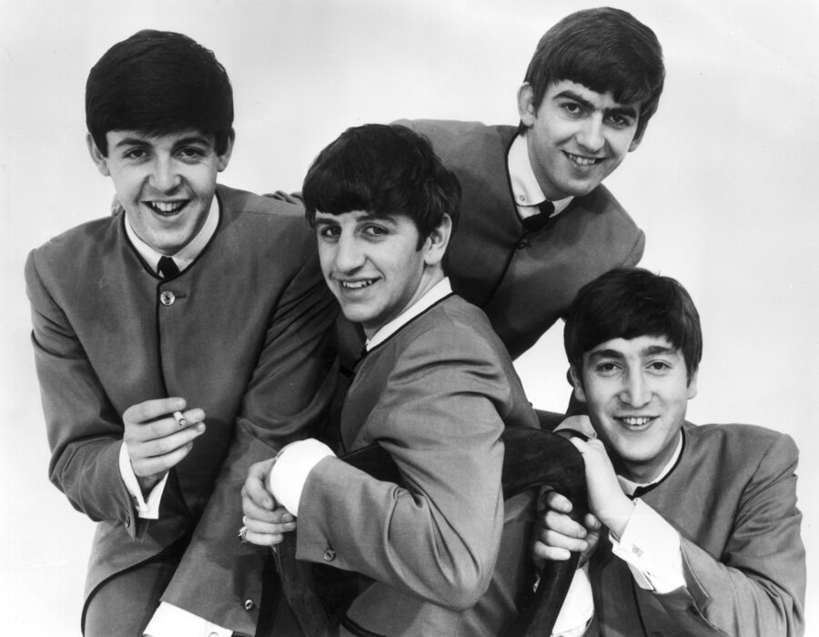

1963 music crowned Surfin' U.S.A. the year's biggest song.
It never once reached number one on the weekly chart.
Twenty-one other singles did reach number one that year.
Beatlemania took over Britain months before America noticed the Beatles.
Listen to 1963 Music
25 of 1963's biggest hits are playable below, from Billboard's year-end top 100 for 1963.
Press play on any row, or use Play All to run the whole list.
| # | Title | Artist | Chart Peak | Genre |
|---|---|---|---|---|
| Surfin' U.S.A. | The Beach Boys | No. 3 | Garage & Surf Rock | |
| The End of the World | Skeeter Davis | No. 2 | Country (Nashville Sound) | |
| Rhythm of the Rain | The Cascades | No. 3 | Pop & Brill Building | |
| He's So Fine | The Chiffons | No. 1, 4 wks | Pop & Brill Building | |
| Blue Velvet | Bobby Vinton | No. 1, 3 wks | Pop & Brill Building | |
| Hey Paula | Paul and Paula | No. 1, 3 wks | Pop & Brill Building | |
| Fingertips, Pt. 2 | Little Stevie Wonder | No. 1, 3 wks | Motown, Soul & R&B | |
| Can't Get Used to Losing You | Andy Williams | No. 2 | Jazz & Easy Listening | |
| My Boyfriend's Back | The Angels | No. 1, 3 wks | Pop & Brill Building | |
| Sukiyaki | Kyu Sakamoto | No. 1, 3 wks | Jazz & Easy Listening | |
| So Much in Love | The Tymes | No. 1, 1 wk | Motown, Soul & R&B | |
| Puff, the Magic Dragon | Peter, Paul and Mary | No. 2 | Folk | |
| Blowin' in the Wind | Peter, Paul and Mary | No. 2 | Folk | |
| Wipe Out | The Surfaris | No. 2 | Garage & Surf Rock | |
| I Love You Because | Al Martino | No. 3 | Jazz & Easy Listening | |
| Wild Weekend | The Rebels | No. 8 | Garage & Surf Rock | |
| You're the Reason I'm Living | Bobby Darin | No. 3 | Jazz & Easy Listening | |
| Walk Like a Man | The Four Seasons | No. 1, 3 wks | Pop & Brill Building | |
| Mockingbird | Inez and Charlie Foxx | No. 7 | Motown, Soul & R&B | |
| I Will Follow Him | Little Peggy March | No. 1, 3 wks | Pop & Brill Building | |
| Pipeline | The Chantays | No. 4 | Garage & Surf Rock | |
| Surf City | Jan and Dean | No. 1, 2 wks | Garage & Surf Rock | |
| It's My Party | Lesley Gore | No. 1, 2 wks | Pop & Brill Building | |
| Blame It on the Bossa Nova | Eydie Gorme | No. 7 | Jazz & Easy Listening | |
| You Can't Sit Down | The Dovells | No. 3 | Motown, Soul & R&B |

Table of Contents
- Listen to 1963 Music
- 1963 Music's Billboard Hot 100 Number Ones
- Key Albums Released in 1963
- Notable Events in 1963
- Genre Shifts in 1963 Music
- Play 1963 on the Radio Dial
- FAQ
1963 Music's Billboard Hot 100 Number Ones
Twenty-one different singles topped the Billboard Hot 100 during 1963, counting one holdover from 1962.
Jimmy Gilmer and the Fireballs' Sugar Shack led the longest, five weeks starting that October.
The year closed with a genuine oddity, a Belgian nun's Dominique, which carried the chart into 1964.
| Title | Artist | Chart | Peak Date | Weeks at #1 |
|---|---|---|---|---|
| Telstar | The Tornados | Billboard Hot 100 | Jan 5, 1963 | 1 (holdover from 1962) |
| Go Away Little Girl | Steve Lawrence | Billboard Hot 100 | Jan 12, 1963 | 2 |
| Walk Right In | The Rooftop Singers | Billboard Hot 100 | Jan 26, 1963 | 2 |
| Hey Paula | Paul and Paula | Billboard Hot 100 | Feb 9, 1963 | 3 |
| Walk Like a Man | The Four Seasons | Billboard Hot 100 | Mar 2, 1963 | 3 |
| Our Day Will Come | Ruby and the Romantics | Billboard Hot 100 | Mar 23, 1963 | 1 |
| He's So Fine | The Chiffons | Billboard Hot 100 | Mar 30, 1963 | 4 |
| I Will Follow Him | Little Peggy March | Billboard Hot 100 | Apr 27, 1963 | 3 |
| If You Wanna Be Happy | Jimmy Soul | Billboard Hot 100 | May 18, 1963 | 2 |
| It's My Party | Lesley Gore | Billboard Hot 100 | Jun 1, 1963 | 2 |
| Sukiyaki | Kyu Sakamoto | Billboard Hot 100 | Jun 15, 1963 | 3 |
| Easier Said Than Done | The Essex | Billboard Hot 100 | Jul 6, 1963 | 2 |
| Surf City | Jan and Dean | Billboard Hot 100 | Jul 20, 1963 | 2 |
| So Much in Love | The Tymes | Billboard Hot 100 | Aug 3, 1963 | 1 |
| Fingertips, Pt. 2 | Little Stevie Wonder | Billboard Hot 100 | Aug 10, 1963 | 3 |
| My Boyfriend's Back | The Angels | Billboard Hot 100 | Aug 31, 1963 | 3 |
| Blue Velvet | Bobby Vinton | Billboard Hot 100 | Sep 21, 1963 | 3 |
| Sugar Shack | Jimmy Gilmer and the Fireballs | Billboard Hot 100 | Oct 12, 1963 | 5 |
| Deep Purple | Nino Tempo and April Stevens | Billboard Hot 100 | Nov 16, 1963 | 1 |
| I'm Leaving It Up to You | Dale and Grace | Billboard Hot 100 | Nov 23, 1963 | 2 |
| Dominique | The Singing Nun | Billboard Hot 100 | Dec 7, 1963 | 4 (continued into 1964) |
Surfin' U.S.A. Tops the Year Without Reaching No. 1
No chart quirk sums up 1963 music better than its own year-end champion.
The Beach Boys' Surfin' U.S.A. peaked at only number three on the weekly Hot 100 that May.
Steady sales and airplay all year still carried it to the top of Billboard's year-end ranking for 1963.
It never once sat at number one on a single weekly chart to get there.
Key Albums Released in 1963
Album releases in 1963 split in two directions.
A British pop explosion collided with an American folk and surf scene still finding its footing.
- Please Please Me — The Beatles, Parlophone Records (released March 22, 1963): the group's debut album, led by the singles Please Please Me and Love Me Do.
- The Freewheelin' Bob Dylan — Bob Dylan, Columbia Records (released May 27, 1963): Dylan's second album, introducing Blowin' in the Wind.
- Surfer Girl — The Beach Boys, Capitol Records (released September 16, 1963): the band's third album, the first produced solely by Brian Wilson.
Beatlemania Takes Over Britain, Not Yet America
Please Please Me turned the Beatles into stars across Britain within weeks of release.
From Me to You and She Loves You kept them at number one for most of the year.
None of that showed up on the American charts yet.
The Beatles would not reach the Billboard Hot 100 until the next year.
I Want to Hold Your Hand debuted at number 45 in January 1964.
Notable Events in 1963
Two chart milestones show how split the year really was.
- She Loves You gave the Beatles their first run at number one on the UK Singles Chart on September 12, 1963. Read more on September 12
- Bobby Vinton's Blue Velvet reached number one on the Billboard Hot 100 on September 21, 1963, the same week She Loves You still held the top spot across the Atlantic. Read more on September 21
Genre Shifts in 1963 Music
Surf rock and Brill Building pop still ran the Hot 100 in 1963 music.
The year-end top 25 still shows real movement underneath.
Five of the year's biggest songs came from the garage and surf rock scene.
Surfin' U.S.A. itself led the way.
Girl groups and pop vocalists filled eight more spots, keeping pop and Brill Building songwriting on top.
Little Stevie Wonder's Fingertips, Pt. 2 gave Motown its first number one record.
It was an early sign of where Motown, soul and R&B was headed for the rest of the decade.
Andy Williams and Eydie Gorme kept adult pop and the bossa nova craze alive on jazz and easy listening radio.
Skeeter Davis crossed over from Nashville Sound country the same year.
The Folk Revival Breaks Into the Top 10
Peter, Paul and Mary put two folk revival songs into the year-end top 25.
Puff, the Magic Dragon and Blowin' in the Wind both made the cut.
Both were still running on the Hot 100 that August, carried from coffeehouse stages onto Top 40 radio.
A different wave was building across Britain at the same time.
Cilla Black signed with Brian Epstein that September.
She joined the wave of Liverpool acts following the Beatles toward the British Invasion.
The US Hot 100 would not feel that sound until 1964.
Play 1963 on the Radio Dial
Hear 1963 music the way listeners did, back to back and unscripted.
The site's own Play 1963 on the Radio Dial tunes every station to songs from this year alone.
FAQ
What was the number one song of 1963?
Jimmy Gilmer and the Fireballs' Sugar Shack held the longest run at number one in 1963.
It stayed on top for five weeks starting that October, longer than any other single that year.
What song topped the Billboard Year-End Hot 100 of 1963 even though it never reached number one?
The Beach Boys' Surfin' U.S.A. topped Billboard's year-end Hot 100 for 1963.
It managed that despite peaking at only number three on the weekly chart that May.
Why didn't the Beatles top the US charts in 1963?
Beatlemania took over Britain in 1963 behind Please Please Me and She Loves You.
The Beatles' first US hit, I Want to Hold Your Hand, entered the Hot 100 on January 18, 1964.
No Beatles single charted in America in 1963.
What was The Freewheelin' Bob Dylan?
It was Dylan's second album, released by Columbia Records on May 27, 1963.
It introduced Blowin' in the Wind.
Peter, Paul and Mary turned that song into a top 10 hit the same year.
What kind of music was popular in 1963?
1963 mixed surf rock instrumentals, Brill Building pop and girl groups with early Motown soul and Nashville country crossovers.
A folk revival broke into the Top 10 too.
Beatlemania was building in Britain ahead of its US arrival the next year.
1963 turned out to be a year split in two.
America danced to surf instrumentals, girl groups and a folk revival breaking into the Top 10.
Britain fell for a Liverpool band the rest of the world had not met yet.
Compare it with the chart-topping twists of 1962 music.
Or explore the British Invasion sound about to cross the Atlantic.
Hear more of the decade in the best 60s songs list.
Explore the rest of the decade on the 1960smusic.net homepage.